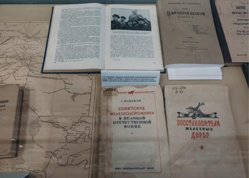
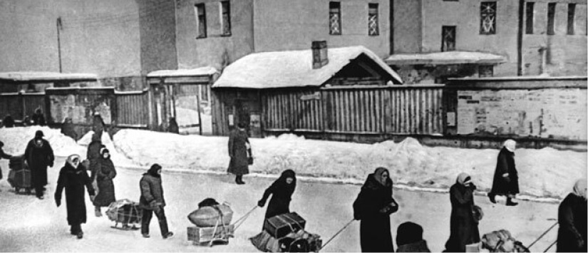

Центр «Прожито» собирает, описывает и публикует документы личного происхождения и разрабатывает исследовательские инструменты для работы с ними. Материалы публикуются и описываются силами участников-волонтёров, к сообществу которых может присоединиться каждый.
Спецпроекты

«Прожито» в Перми
Проект осуществляет поиск и копирование документов в пермских государственных и семейных архивах для того, чтобы собрать цифровую народную коллекцию документов по истории города и края.
13 декабря 2021

Блокада
В условиях катастрофического голода, холода, вражеских бомбардировок и обстрелов сотни тысяч людей оказались заперты в городе. У многих из них был доступ к бумаге и чернилам, и некоторые начали вести дневники.
13 декабря 1942